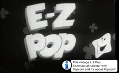

-
Introduction

-
History of Media

-
Remix

-
Ways of the Web

-
Web Native Storytelling

-
Web Native Planning

Week Two Resources
History of Media Discussion Guide
A Brief History of Storytelling
DIY: Hack a Commercial
-

Hack a Commercial
Week Two: History of Media
Week Two Assignments
1: Watch the "Week 2: Media History" curriculum video and explore the pop up resources in the video
2: Read "A Brief History of Visual Storytelling"
3: Write Individual Blog post
Write a blog post on the week two guest speaker, the discussion on Media History and the reading.
4: Hack a Commercial using the Popup Template
Tool: Popcorn
See the DIY activity - this activity will have learners recontextualize classic commercials from the Internet Archive using Popcorn.
5: Project Management
Discuss in your group:
- the Web Native Film and site your group will create. Decide on one and create the first version of your project narrative. Each group member should compose a few paragraphs about the collaborative process. These paragraphs will later form the first blog post that will be put into Tumblr.
- what roles individual learners will play. Will some members focus on video production, while others dive into web making?
- which tools your group will use to communicate
- why different perspectives are valuable
- the voice of your project (serious, humorous, formal, informal, etc)
Document your decisions in an online document. Write up how you came to your decisions and compose a synopsis of the discussion help over varying perspectives. Share this document with the rest of the groups.
History of Media Discussion Guide
Participate in a guided discussion and critical thought experiment surrounding the history of media and how specific medias altered our cultural landscape, why did this happened, why it was/is important. Take notes on the discussion. Some stuff you can talk about with your peers:
 The Printing Press Before Gutenberg invented the printing press, communicating with the masses was something that only the Church or the very wealthy could do. Information was localized and it stayed localized, it wasn't copied or distributed often and there was a massive divide between the haves and have nots. Then, Martin Luther used the technology to start the Protestant Reformation....
The Printing Press Before Gutenberg invented the printing press, communicating with the masses was something that only the Church or the very wealthy could do. Information was localized and it stayed localized, it wasn't copied or distributed often and there was a massive divide between the haves and have nots. Then, Martin Luther used the technology to start the Protestant Reformation....
Thomas Edison invented the Phonograph, instigating Mass Medium #2: Recordings.  Edison's invention allowed people to share information first hand, over time and across great distances. Recorded music influenced society in a great many ways. Jazz, for example, opened the doors for newly freed slaves to become entertainers and in the 60's Rock and Roll continued the "freeing" of people of color as well as women from traditional life styles.
Edison's invention allowed people to share information first hand, over time and across great distances. Recorded music influenced society in a great many ways. Jazz, for example, opened the doors for newly freed slaves to become entertainers and in the 60's Rock and Roll continued the "freeing" of people of color as well as women from traditional life styles.
Cinema expanded on recordings allowing us to both SEE and hear other people's experiences. For more detailed discussion points on cinema, see A Brief History of Storytelling.
 Radio When Marconi figured out how to transmit live messages using Morse code, he changed the way mankind related to information. It was the first time we could experience what was going on ?over there? instantaneously. The reason that the Titanic sinking had such an impact is partly because live transmits were being sent from the scene. People were able to experience the drama as it happened and it's been said that the only reason there were ANY survivors from the Titanic was because of Marconi's invention.
Radio When Marconi figured out how to transmit live messages using Morse code, he changed the way mankind related to information. It was the first time we could experience what was going on ?over there? instantaneously. The reason that the Titanic sinking had such an impact is partly because live transmits were being sent from the scene. People were able to experience the drama as it happened and it's been said that the only reason there were ANY survivors from the Titanic was because of Marconi's invention.
Then came Television, initially an extension of radio broadcasts, early TV was probably kind of boring. But now, we all know that TV has the power to inform us instantaneously. And to show us that in "reality" everyone has perfect hair and teeth.
After TV nothing happened for a while until the US Military started experimenting with distributed computer networks. That didn't actually help out the general public much until 1989 when Tim Berner's Lee developed the World Wide Web. Now the WWW can do everything the first 5 media forms could do:
- Read and publish content
- play recordings
- watch movies
- listen to radio
- watch TV
It's true that on the Web you can find varying degrees of quality. That's because the Web is a medium where anyone can participate - the fact that you can find feature films and cat videos in the same browser is what makes this medium unique.
A Brief History of Storytelling
Introduction
To understand the tremendous opportunities that the internet offers as a new storytelling medium, we need to first begin to think about it as a new "canvas" with its own unique properties, and we need to understand how it is different than the artistic forms of expression that have preceded it.
This handout provides a brief historical review of the evolution visual storytelling. It focuses specifically on how artists took advantage of each new technological development in visual expression, but also how each development - from painting to photography to motion pictures to video games - also dictated the kind of content that is produced. Thinking about each art form this way will be crucial when we envision the internet as a storytelling canvas and discuss the best-practices for web-native filmmaking.
Anyone who has ever tried to write a script knows that you cannot write interior thoughts in a screenplay, you can only what we can see and hear. In a novel, you can write "Tom is hungry" - you can tell us that someone is hungry, but in a movie you must show us that Tom is hungry: "Tom's stomach rumbles." The novel may have the advantage over the film in sharing interior thoughts, but can written words express the grandeur of Avatar's visuals? Or express the depths of Heath Ledger's unsettling performance as The Joker in The Dark Knight?
Or: Imagine you were given a pad of paper and a pencil and asked to tell a story with it. Now imagine you were given the same pad but with a set of watercolor paints instead - don't you think the kind of story you told, and how you told it, would be different? Now imagine your pad of paper is the internet.
Cave Paintings
Thirty four thousand years ago, in a large cave in Southern France, an artist used pigment to create some of the first known paintings. Herds of bison, charging rhinos, leaping gazelle. The animals - some of them now extinct - were rendered in startling detail. However, these were not simply portraits. The animals were interacting with one another - and interaction is story. The artist was a storyteller. By using visual means of expression to recount the artist's experiences at that moment in time, we can draw a line between the caves of southern France and the contemporary stories we see unfolding on our computer monitors in the present day.
 There is evidence that those early painters struggled
with the limitations of their chosen "canvas" and also
found ways to take advantage of the opportunities their
unique art form provided them. Painters in the Chauvet
caves sanded down the textured walls to have a lighter,
smoother surface upon which to work, and then after the
paintings were completed they etched an outline of the
subject into the stone so that the torchlight would cast
shadows that made the image stand out. In other places, rather than try to disguise the texture or curvature of the
walls, the artists actually incorporated these qualities into their work. A jagged piece of the wall could be used to
represent fur, the sloping lines of a rock race could direct the viewer's eye to where the artist wanted them to look.
There is evidence that those early painters struggled
with the limitations of their chosen "canvas" and also
found ways to take advantage of the opportunities their
unique art form provided them. Painters in the Chauvet
caves sanded down the textured walls to have a lighter,
smoother surface upon which to work, and then after the
paintings were completed they etched an outline of the
subject into the stone so that the torchlight would cast
shadows that made the image stand out. In other places, rather than try to disguise the texture or curvature of the
walls, the artists actually incorporated these qualities into their work. A jagged piece of the wall could be used to
represent fur, the sloping lines of a rock race could direct the viewer's eye to where the artist wanted them to look.
So what can we say made the cave wall unique as a medium for visual expression? What are its benefits as a canvas? What are its limitations? First off, the work of art is singular - you cannot copy a cave wall. Obviously, this also means you must go to the cave - it isn't coming to you. While this may seem like a limitation, think about the experience of standing before something that you know is unique in the world - a building, a sculpture, even a person. Something that can be copied is more accessible, but for that very reason it also loses some of its magic. Cave walls are rarely smooth, so you must accommodate the textures and shape of the wall, but they are also not confined to a specific shape the way a piece of paper or a canvas is. It can take any shape, and it is three-dimensional ? there is freedom, and possibility, that doesn't exist in the confines of an 8.5x11 sheet of paper.
We could spend time discussing the evolution of painting, the advantages and disadvantages of watercolor vs. oilbased paint, but you get the point ? each medium is unique, each has its strengths and limitations, and our images and stories are shaped by the medium we choose to express ourselves in. Moving on!
Photography
 The first photographs were taken by a Frenchman named Joseph
Nicephore Niepce in 1827. They were called Heliographs because the
images were etched by rays of light from the sun. Later, photography
would capture an image on a celluloid material - called a negative -
that allowed for the precise duplication of images.
The first photographs were taken by a Frenchman named Joseph
Nicephore Niepce in 1827. They were called Heliographs because the
images were etched by rays of light from the sun. Later, photography
would capture an image on a celluloid material - called a negative -
that allowed for the precise duplication of images.
Photography was unique in many ways: it produced art that precisely replicated the subject, unlike the subjective interpretations of painting or drawing. It also was produced quickly - the image was captured in a fraction of a second, and the chemical developing and printing could be done in hours. Its speed and potential for reproduction made photography the most important development in visual expression in centuries.
If the benefits of photography were its striking ability to produce what we would consider "life-like" imagery at a remarkable speed, what were its limitations? As with painting on canvas (and perhaps because of the canvas), a rectangular frame was quickly agreed upon by purveyors of the art. Once mass-produced cameras embraced the aspect ratio the rectangle became the format that all photos had to adhere to. Images were also limited to black and white expression for the first 75 years of photographic history; readily accessible color photography was introduced to the public in 1903.
Perhaps most importantly, though, the photographic artist also surrendered control over the subject - a painter could create each aspect of the image as she desired, while a photographer is "stuck" with using what actually exists in the world. The photograph sacrificed poetry for authenticity.
Motion Pictures & Television
 The first motion picture device is credited to Eadweard
Muybridge, who used a series of cameras to study the
motion of horses in 1877.
The first motion picture device is credited to Eadweard
Muybridge, who used a series of cameras to study the
motion of horses in 1877.
Movie cameras built upon the still-image camera's capacity for capturing what is perceived as reality. The combination of photographic fidelity with seamlessly moving images, along with the invention of the magnetic audio track and the development of a system of editing by early American filmmaking pioneers like Thomas Edison and D.W, Griffith, resulted in an art form that viewers could engage on a level of near-hypnosis.
At first, however, storytelling wasn't considered the domain of the motion picture camera, Early films were basically long-format still photographs - footage of a baby eating, a train arriving at a station, people leaving work after a long day at the factory. In the same way that we see the internet as simply an improved version of other media (better than mail, better than a yellow pages, better than a Thomas Brothers, etc), we first envisioned the motion picture camera as just a better version of the still camera, rather than its own unique means of artistic expression. What we would consider the "grammar" of film language - close up shots, reverse shots, continuity editing, special effects ? began to emerge at the turn of the century and by the 1914 had crystallized into something we would recognize in today's theatres. And this particular voice, this mode of storytelling that disguises editing and creates a highly-seductive illusion of continuous time and space, has become the dominant form of visual storytelling on our planet.
If we identify the unique property of the motion picture storytelling as the ability to create a hypnotic, life-like world that the viewer gets sucked into, then what are it's limitations? Well, for much of its history, motion pictures were so prohibitively expensive to make that few people got to make them, and those that did were severely limited in what they could do and say by the financial constraints put upon them. In short, movies were expensive to make and had to make their money back, so they had to follow a very precise, very limiting formula.
As filmmaking equipment became more affordable and accessible, there were more opportunities for artists to pursue non-commercial storytelling. By the time these opportunities emerged in the 1950s and 1960s (most notably in the form of smaller 16mm and 8mm film cameras), though, audiences had a long-established expectation of what a film should look and sound like. The magic of film's ability to mimic real-life was also a prison: audiences did not tolerate deviations from that style of storytelling. While we were open minded about impressionist and abstract painting, we struggled with motion picture expressions that didn't hold true to the way we saw and heard the world around us.
A conversation about the developments in motion picture technology and storytelling wouldn't be complete without mention of the television revolution. First design in 1926 and implemented in Germany in 1935, the television came to American in 1941 and by 1959 there were 50 million TV sets in the country.
Television offered a revolutionary means of engagement: changing the channel. This wasn't available when one went to the movies ? the closest a filmgoer could come to changing the channel was walking out of one theater and into another. Television also offered live broadcasts, offering a more comprehensive experience than the radio broadcast. Finally, the content was also endlessly streaming: you could always watch television. These qualities are both early echoes of the interaction we see with the internet today.
If film form was limiting in its scope and language, though, television was far more so. Deeply-rooted financial pressures and rigorously adhered-to schedules (24 minutes for a half-hour slot, 44 minutes for an hour slot, etc) made television highly formulaic and limited in storytelling opportunities.
Video Games
 The first video game is widely recognized as "Cathode Ray Tube Amusement Device", an extremely basic one-player
proto-Missile Command devised in 1947 for an analog computer. Fifty years later, video games would surpass motion
pictures as the high-grossing visual-storytelling medium on the planet.
The first video game is widely recognized as "Cathode Ray Tube Amusement Device", an extremely basic one-player
proto-Missile Command devised in 1947 for an analog computer. Fifty years later, video games would surpass motion
pictures as the high-grossing visual-storytelling medium on the planet.
While television gave you the opportunity to change the channel from one story to another, video games offered the opportunity to actually change and even create the content of the story. Most story-based video games still operate on a largely linear path with a set outcome, the gettingthere is going to be unique for each "user" (and note the distinction between "viewers" and "users" - what do we call people who engage with web-native films?) And while video games may have lacked the life-like image quality of films, they made up for it in interactivity and identification: having an avatar - a graphic representation of the user ? that responded to her commands.
Interactive storytelling is becoming increasingly common in our society. Consoles like the Wii have made gaming more accessible to broader communities. The passivity of the motion picture experience is being challenged by the interactivity of the gaming console. Again, we can see echoes of the internet in the degree to which the user or viewer can dictate the terms of engagement with the story.
DIY Hack a Commerical
DIY Hack a Commercial
Add your own voice to an old commercial by adding popups and commentary. You can change meanings, extend messages, and otherwise recontextualize the video.
- Find a commercial you would like to comment on at the Prelinger Archive Browse by collection or title. Once you've found a commercial to work with, choose a file type (we recommend the ogg file format) and click to open the commercial in your browser.
- Open the popup template in your browser
- Click the Edit Source button in the upper lefthand corner of the video and change the URL to the URL of the of the commercial you'll be commenting on.
- Drag a popup event to the place in the Timeline where you want the popup to appear.
- Double Click on the event to adjust the text, position, and sticker for that popup event.
- Keep adding popup events to the timeline. When you're ready, click the "share" button and copy and paste your link to save it somewhere. Then, click the export button and save your code.
- Share with the world. Share your video link widely.
- Iterate your project based on feedback you receive.